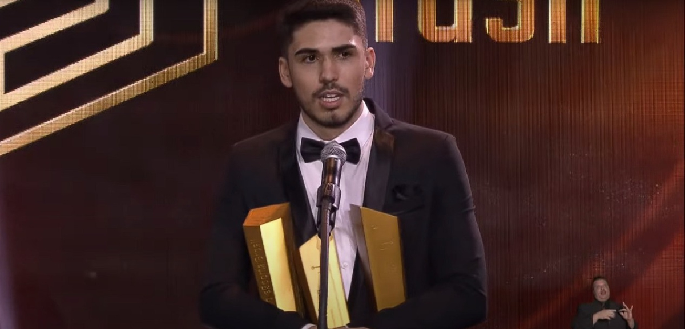

Uma das estrelas da LOUD, Erick “aspas” Santos fez a tríplice e levou os troféus Melhor Atleta de Esports, Melhor Atleta de VALORANT e Atleta Revelação Masculino no Prêmio eSports Brasil 2022. Em entrevista ao ge, o atleta comentou sobre as conquistas individuais, a nova formação da LOUD para 2023 e o que acontecerá em São Paulo.
- • 00nation anuncia line-up de VALORANT
- • Nos EUA, comunidade do VALORANT é a que mais assedia jogadores entre 10 e 17 anos
- • EndGame anuncia nova line-up de VALORANT
A equipe esmeraldina chegará em 2023 com mudanças importantes no time. A saída da dupla Gustavo “Sacy” Rossi e Bryan “pANcada” Luna obrigaram a LOUD a ir no mercado de transferência. Em novembro, foi anunciado as chegadas de Cauan “cauanzin” Pereira e Arthur “tuyz” Vieira.
A gente vai continuar no trabalho e no foco, igual a gente esteve neste ano. Vamos focar e treinar ao máximo para atingir bons resultados e tentar continuar no topo em 2023. A gente trocou dois jogadores, então não está mais no mesmo ‘shape’ do time campeão mundial, porque agora o time é diferente. Com o tempo de treino, a gente vai vendo e reconstruindo novamente. Sempre é possível alcançar o topo novamente, com muita dedicação e foco. Se o time inteiro quiser, vai ter como.

DivuLgação/PrêmioEsportsBR
A noite da premiação do PeB foi inesquecível para aspas. Com três troféus, o jogador encerrou o ano no auge do competitivo e com o reconhecimento. O atleta que esbanja carisma, revelou que não percebido que estava concorrendo na terceira categoria.
"feliz de ter conseguido esses prêmios. Eu realmente não esperava. Fiquei surpreso quando eu recebi o segundo. E o terceiro me pegou mais ainda de surpresa, porque eu não tinha visto que eu estava nesta categoria. Fui pego totalmente desprevenido. Simplesmente incrível! Algo inesquecível!"
O 2022 da LOUD e aspas ficaram para história. Nos agradecimentos, o jogador citou Sacy, um dos encabeçados do projeto “pANcada e amigos” junto de Matias “Saadhak” Delipetro.
“Eu atribuo essas conquistas principalmente ao meu time, que sem eles não teria como, e ao Sacy. Foi ele que me chamou para este projeto. Se não fosse ele, provavelmente nada disso teria acontecido comigo, porque eu não estaria jogando neste time. Não teriam acontecido essas coisas comigo.”
O Brasil receberá o segundo torneio internacional de VALORANT. O primeiro foi o Last Chance Qualifier América do Sul. No mesmo local, Ginásio do Ibirapuera, os 30 times que foram aceitos no sistema de franquias da Riot Games irão competir entre si o campeonato de abertura da temporada. O atleta da LOUD não escondeu o entusiasmo com o torneio que está por vir.
“Vai ser algo incrível, porque vai ser meu primeiro campeonato internacional, só que no Brasil, com torcida, com 30 times ainda de todos os países. Estou muito animado, esperando esse campeonato. Eu acho que ainda a torcida brasileira vai ficar com os times brasileiros, porque em campeonatos internacionais, parece que o Brasil se junta para torcer para os times brasileiros, então eu acho que isso irá acontecer novamente”, afirmou aspas que espera um apoio dos brasileiros para FURIA e MIBR também."
Quer ficar por dentro de tudo o que acontece no mundo do VALORANT? Então, siga o VALORANT Zone nas redes sociais: Twitter Facebook Instagram